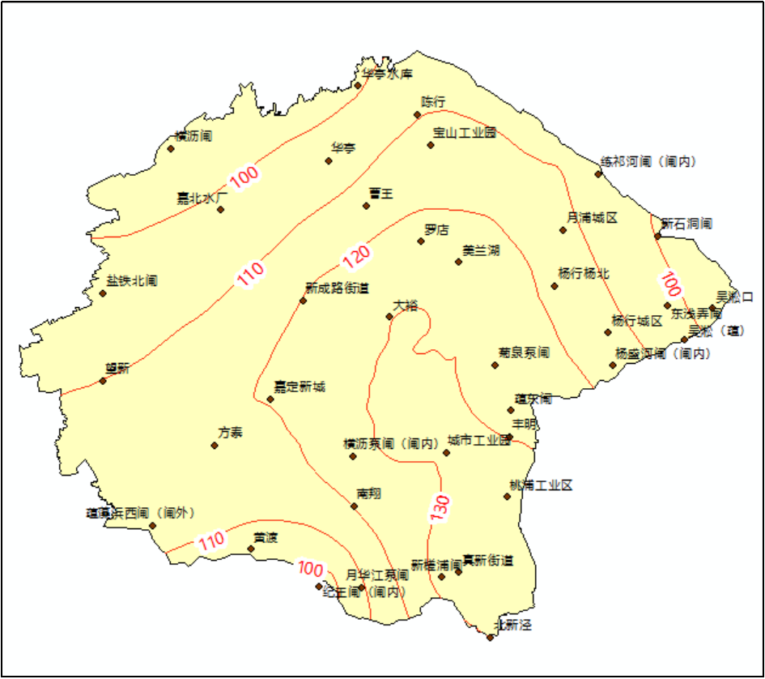

1、潮位特性分析
2022年9月15日凌晨0时30分前后第12号台风“梅花”在上海奉贤沿海再次登陆，登陆时强度为台风，长江口风暴潮增水幅度大。河口吴淞站最高高潮位5.53米历史第五，最高潮位出现时间于9月15日2:15:00，风暴潮影响期内最高低潮位1.42m，最高低潮位出现时间于9月14日21:55:00，此时上海处于天文中潮汛。
“梅花”风暴潮影响期吴淞口站实测潮位
2、暴雨特性分析
受台风“梅花”影响，上海全市普降暴雨，局部大暴雨。其中嘉宝北片内单站雨量最大为新槎浦闸站157mm，其次为真新街道站153.5mm，嘉宝北片“梅花”台风期间总面雨量117.9mm。
“梅花”台风嘉宝北片面雨量过程

“梅花”台风嘉宝北片雨量等值线图
3、河网调蓄能力分析
采用2022年雨量站、水（潮）位站实时监测资料，模拟计算2022年“梅花”台风期（12日08时～15日15时）嘉宝北片槽蓄容量变化过程。
台风“梅花”嘉宝北片蓄量变化与外潮顶托关系
台风“梅花”嘉宝北片蓄量变化与雨型关系
台风“梅花”对上海的风雨影响从9月12日起一直持续到15日，吴淞口站最高高潮位5.53m，约20年一遇，出现时间为9月15日2:15:00，从9月14日起嘉宝北片出现明显降雨，嘉宝北片最大1h面雨量为18.1mm，出现时间为9月14日23:00:00，嘉宝北片从9月12日起开始预降，其中罗店站最低水位2.07m、最高水位2.97m，嘉定南门站最低水位2.37m、最高水位3.01m。由图可见，台风“梅花”期间嘉宝北片河网槽蓄容量整体上升速度迅速，分析其过程，发现上升较快时段集中在外江潮位顶托及降主雨峰峰后。
“梅花”台风期初槽蓄容量为132.97百万m3，警戒水位对应可调蓄容量为21.5百万m3，保证水位对应可调蓄容量为59.65百万m3；“梅花”台风期间最低槽蓄容量118.87百万m3、最高槽蓄容量140.07百万m3，河网槽蓄容量变幅为21.20百万m3，保证水位对应可调蓄容量52.55百万m3。